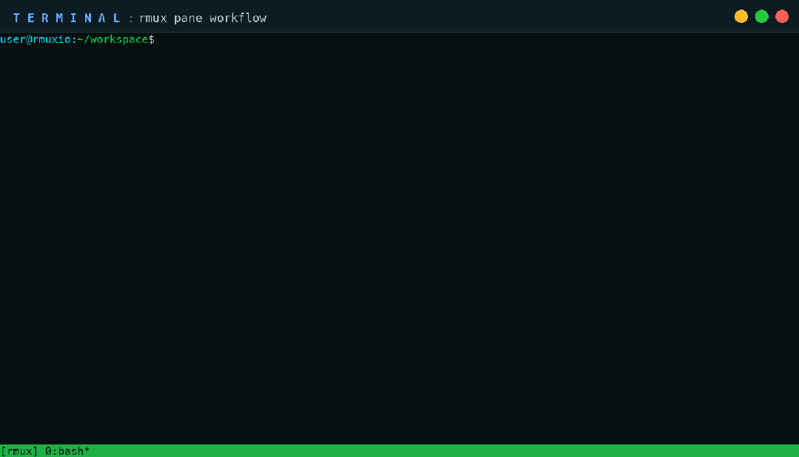
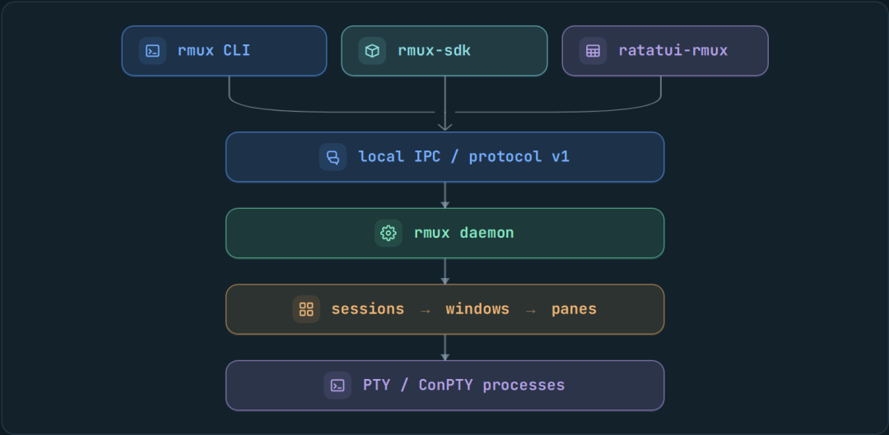
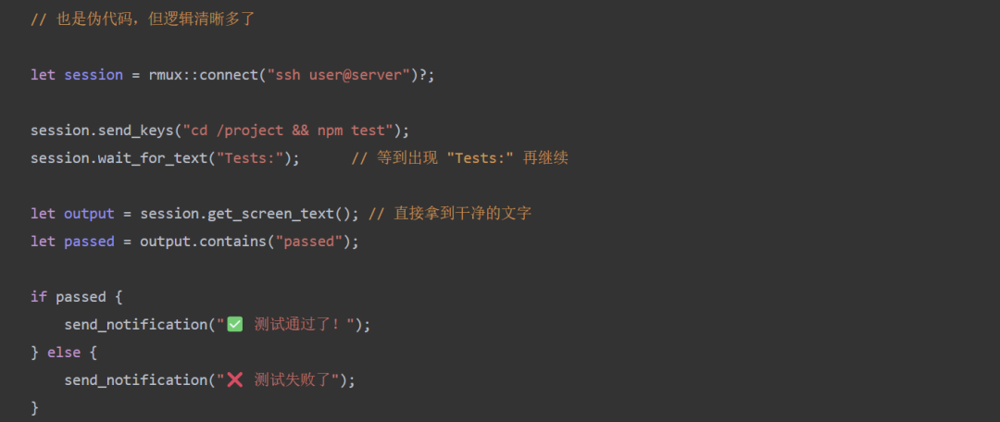
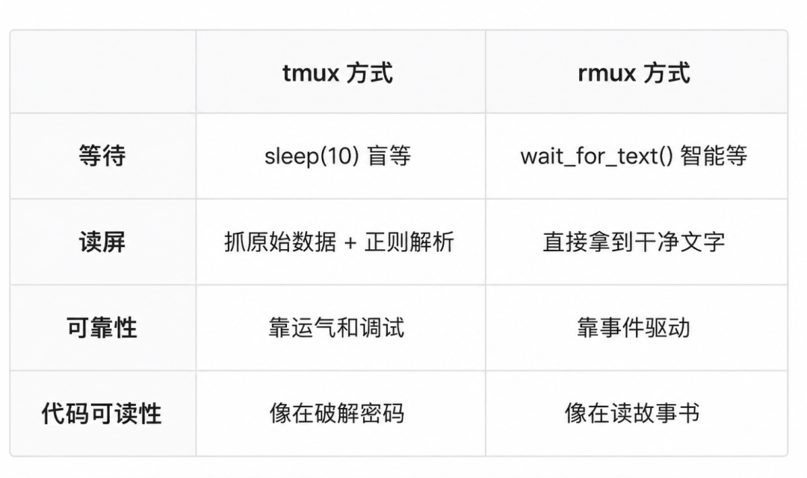
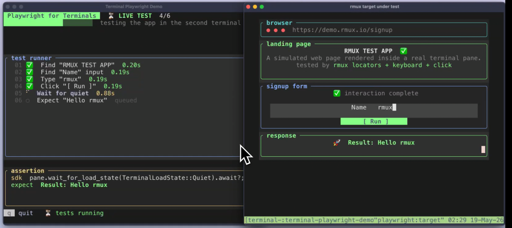
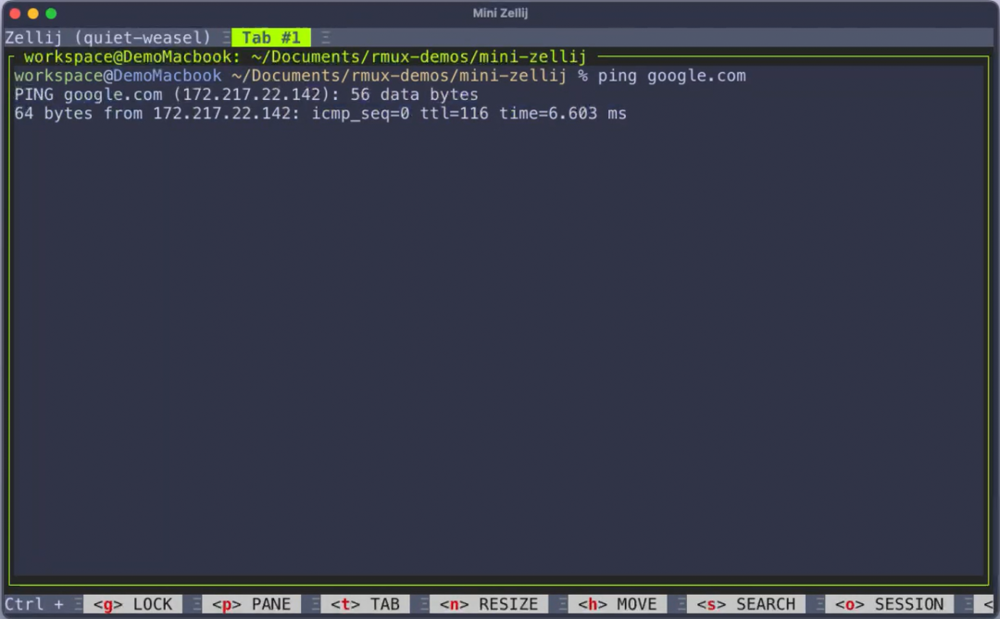
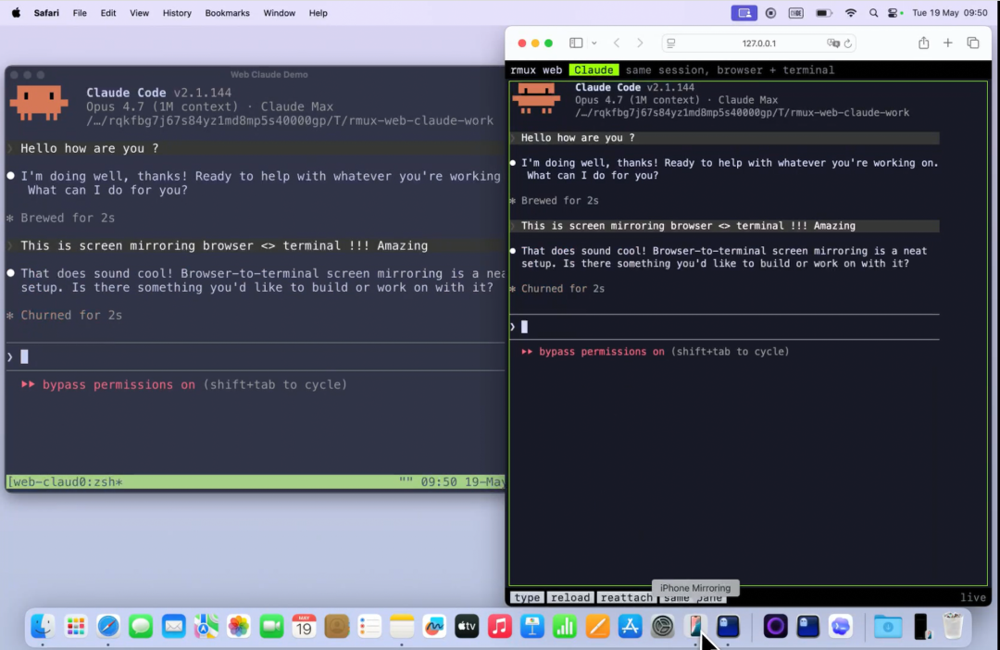
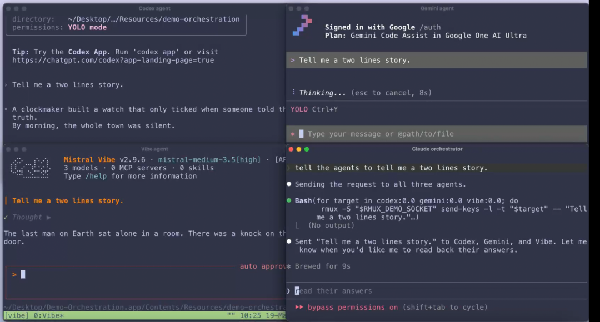
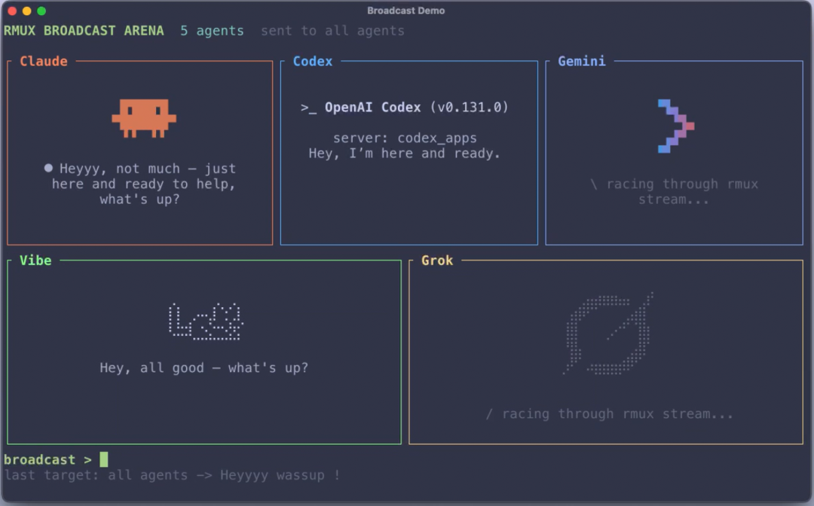
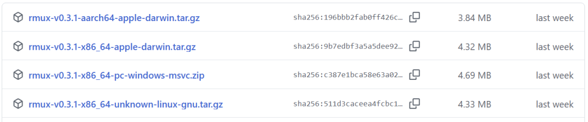

tmux 很强。
可一碰终端自动化，很多人还是得靠 grep 和 sleep 硬凑流程。
有人实在受不了，干脆从零写了个不到 5MB 的工具。
两周后，这个叫 rmux 的项目，在 GitHub 上获得了 1300 个 Star。

它是一个专门用来解决终端自动化难题的工具。
tmux 有多好用，用过的人基本都懂：多窗口、断线不中断，做远程开发特别顺手。
但真要让脚本去自动操作终端，画风就变了。
通常需要搞这么一套流程：
发送命令。随后 sleep 等待，接着抓取屏幕输出，再运用正则去猜测成果，接着才能继续下一步。
整个过程，就好像在门外不停地敲门：好了没有？
rmux 想要突破的，正是这件事。
rmux 的做法是直接装了个门铃——任务完成，它自己通知你。

先看个小白例子
你想要编写一个脚本来完成这样的任务：
自动登录到服务器，之后运行一个测试，等待测试跑完，获取结果，随后把通知发送给你。
01 用 tmux 的话，你得这样写：
sleep(3) — 这个 3 秒到底是怎么定出来的？纯粹靠猜测！
网络要是快的话，就会浪费时间，网络慢的时候，命令还没执行完，你就得去捕捉屏幕了。
sleep(10) 在实际测试当中，有时候 5 秒就跑完了，有时却要 30 秒，你永远没办法把它定得十分准确。
re.search 你需要用正则表达式，在一堆乱码当中去匹配结果，只要少一个空格，可能就匹配不到。
02 用 rmux 就可以这样写：

我用一张图给大家做一个对比。

用大白话概括一下：
用 tmux 做自动化类似盲人摸象，用 rmux 则好比睁眼开车。
最大的改变是什么？
01 不再靠猜，而是等
以前我写 tmux 自动化脚本的时候。最折磨人的地方就在于估算等待的时间。
要是等待的时间太短，命令可能还没有执行完成，要是等待的时间太长，不仅浪费了时间。还不一定准确。
rmux 直接用 wait_for_text("ready") 命令。
你只需要告诉它等到出现 ready 这个词就继续，它就会老实地在那儿等着，一旦出现马上就会通知你。
完全不用 sleep，也不用盲目去猜测。
02 能读懂屏幕上的字
tmux 捕捉到的屏幕内容多半是一堆乱码，从专业角度来讲，它叫作 escape 序列，这时候就需要你自己去解析它了。
而 rmux 则会直接告诉你：第几行第几个字符具体是什么字，运用了什么颜色，用了什么样式。
这就像你能够直接看懂终端上，显示的本末，而不用拿着一堆原始数据再去慢慢琢磨。
03 写代码像操作浏览器
用过 Playwright 的朋友应该能看出来思路基本相同。
类比一下就是。
连接终端，就好比打开浏览器 发送命令，相当于点击按钮 等待结果，类似于等待页面加载完毕 读取状态。则类似于读取页面上的文字
把这种等它好了再下一步的模式搬到了终端上。

04 Windows 用户终于有救了
这一点对于 Windows 用户来讲尤其重要。
以往想要在 Windows 上运用一个好用的终端多路复用器，要么得去安装 WSL，也就是 Linux 子系统，要么就得依赖各种各样的兼容层，常常要折腾很长时间。
rmux 是真正原生的 Windows 支持。
rmux 直接给出了原生的 Windows 支持，不需要虚拟机，也不需要任何兼容层，直接安装上去就能用。
对于那些每天在 Windows 上敲代码的朋友们来说，这是头一回有一个正儿八经的终端工具，可以直接跑起来。
05 连 htop 这种界面都能自动化
不只是能自动化命令，还能去自动化界面程序。
只要你了解 htop，lazygit 这类工具，就会明白它们并不是简单地输入命令之后输出结果。
它们属于那种带有界面的，，需要运用键盘上下左右开展导航的程序。
传统的自动化方式很难去应对这类程序的自动化工作，但 rmux 可以观察到这些程序的界面状态，之后模拟按键去操作它们。
这就意味着：你几乎，能够自动化终端里的所有东西，而不仅仅局限于简单的命令行工具。


特别是在多 Agent 协调和复杂任务编排方面，rmux 展现出了强大的潜力：


看完这些功能，估计不少朋友已经想上手试试了。
Mac 和 Linux 用户，直接用下面这一行命令就能把它安装上去。
curl -fsSL https://rmux.io/install.sh | sh
使用 Windows 的朋友，打开 PowerShell，直接复制并执行这段命令。
irm https://rmux.io/install.ps1 | iex
要是你不想用命令来安装。也可以直接去下载安装包。

用起来和 tmux 非常类似：
rmux new-session -d -s work
rmux split-window -h -t work
rmux send-keys -t work 'echo "hello from rmux"' Enter
rmux attach-session -t work
用过 tmux 的朋友。会发现上手几乎是零成本。
写在最后
rmux 确实是个好东西，但也别把它神化了，在日常使用场景下，tmux 会显得更加稳定一些。
毕竟 rmux 还只是刚刚起步。
平时工作中 tmux 用的少，那手动去操作终端，已经足够了。
没必要再搞 tmux。
但是你希望让终端做自动化工作，想让 AI 帮你干活，想用程序化的方式去读取终端的状态。
那么 rmux 绝对值得你去尝试一下。
毕竟，能让程序员省时间的工具，都值得鼓励。
大家可以在评论区聊聊各自的看法。
这个项目基于 MIT 或 Apache-2.0 双协议开放，感兴趣的同学，可以去 GitHub 仓库查看源码和文档。
开源地址：https://github.com/Helvesec/rmux
既然都早就看到这儿了，欢迎顺手点个赞，在看和转发，也可以给个星标⭐，以便接收最新的文章，下一期再见！